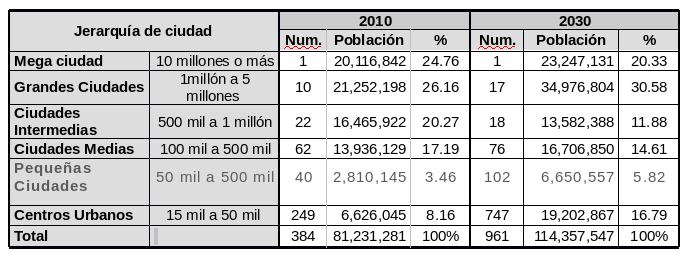

En las próximas décadas el crecimiento demográfico en México será urbano, actualmente el país cuenta con 384 ciudades y se estima que para el año 2030 sumarán 961, en las que se concentraran 83.2% de la población nacional y en donde muy probablemente, sea la población de escasos recursos la que predominará.
Si no se revierte este patrón territorial expansivo se pueden augurar problemáticas como: incremento de las distancias, tiempos y costos de los trayectos urbanos; aumentando los efectos negativos, costos sociales y se requerirá de mayor inversión para lograr mayor conectividad espacial.
Asimismo, si se continúa con el desarrollo que tiende a impulsar el uso del automóvil se agudizarán los efectos negativos al medio ambiente y la inequidad y desigualdad socio-económica. Otra problemática que puede presentarse es la formación de asentamientos humanos ilegales, informales e irregulares.
La Zona Metropolitana de La Laguna no se excluye de esta problemática ya que se ubica dentro de la categoría de “Grandes Ciudades”, de acuerdo a la clasificación del Sistema Nacional Urbano y la CONAPO. Para 2030, se estima que la población de la ZML llegue a 1, 501,567 habitantes.
En 2010 existían 59 zonas metropolitanas de las que solo la Zona Metropolitana del Valle de México (ZMVM), rebasaba por mucho los 10 millones de habitantes, 10 más se ubicaban en el rango de entre uno y cinco millones de habitantes y en el resto 48, su población oscilaba entre 100 y un millón de habitantes, donde seis metrópolis han rebasado sus límites estatales y siete se reconocen como fronterizas que seguirán concentrando población, al tiempo que nuevas metrópolis se agregarán entre 2010 y 2030.
Como una medida para contener en lo posible los crecimientos desproporcionados y la cantidad de ciudades futuras, la Secretarías de Desarrollo Agrario, Territorial y
Urbano (SEDATU), a través de la Comisión Nacional de Vivienda (CONAVI) propusieron una Política Nacional de Vivienda articulada con las ciudades.
Con el Programa de Acceso al Financiamiento para soluciones Habitacionales que opera la CONAVI se definieron herramientas para contener el desarrollo urbano expansivo y desordenado, como son los Perímetros de Contención Urbana (PCU).
De esta forma se busca crear ciudades más compactas con mayor densidad de población y actividad económica, fomentar la nueva vivienda sustentable desde las dimensiones económica, ecológica y social.
Su objetivo es promover en los desarrolladores la construcción de viviendas mejor ubicadas, cercanas a los centros de empleo, la infraestructura y los servicios, con base en los subsidios.
CLASIFICACIÓN
Los Perímetros de Contención Urbana se clasifican en tres ámbitos o contornos:
Intraurbano, U1: Son zonas urbanas consolidadas con acceso al empleo, equipamiento y servicios urbanos.
Primer contorno, U2: zonas en proceso de consolidación con infraestructura y servicios urbanos de agua y drenaje mayor al 75% inmediatas a U1.
Segundo contorno, U3: zonas contiguas al área urbana, en un cinturón periférico al área urbana, definido de acuerdo al tamaño de la ciudad.
En la Ciudad de Torreón durante 2017 se ofertaron un total de 2,797 viviendas, de las cuales 364 de ellas se encontraban en el perímetro intraurbano (u1), 1,222 se encontraban en el primer contorno (u2) y 1,167 en el segundo contorno (u3). Asimismo 44 viviendas se ofertaron fuera de los perímetros de contención urbana.
Esto quiere decir que solo 13 por ciento de las viviendas ofertadas fueron dentro del contorno intraurbano, área donde concentra en mayor medida el acceso al empleo, equipamiento y servicios urbanos. La mayor oferta de vivienda, casi 44%, se ubicó en el segundo contorno y un 41% se ofertó en el tercer contorno dentro de zonas contiguas al área urbana.
Los PCU ayudan a que los subsidios que se entregan a la vivienda se apliquen a aquellas que se ubican en zonas dentro de estos, dependiendo del perímetro en que se encuentre la vivienda permiten definir el monto de subsidio que será otorgado para la compra, construcción, ampliación y mejoramiento de vivienda.
La medida permite contar con ciudades compactas, participativas y sostenibles, beneficiando al medio ambiente al frenar el crecimiento de la ciudad, que con su expansión destruyen el ecosistema que hay alrededor.
Los beneficios de las viviendas ubicadas en los polígonos de contención son: fuentes de trabajo, cobertura de transporte público y vialidades principales, equipamiento educativo y espacios de recreación , cobertura de infraestructura y servicios básicos y zonas comerciales.
Al considerar que es en las ciudades donde se concentran las fuerzas productivas, científicas, políticas y culturales del país, al grado de que la prosperidad del país depende de ellas, es fundamental ordenarlas, hacerlas más productivas, competitivas y seguras.
Recuadro:
Proyección del Sistema Urbano Nacional (SUN), 2010-2030 (CONAPO)
